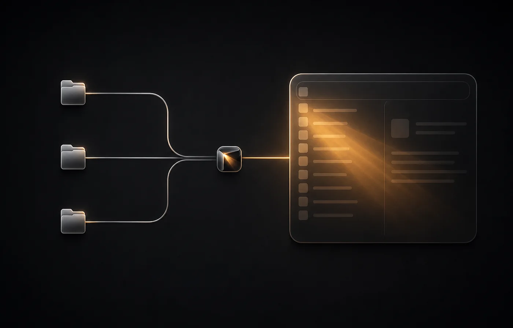

Every app.
No index.
Cornerlight reads the applications already on your Mac, then hands that exact inventory to macOS’s native launcher UI.
- Roots
- 3
- Index
- None
- Polling
- None
SYSTEM HANDOFF / 001
The shortest path to native.
Cornerlight owns the inventory.
macOS owns the experience.

01 / READ/System/Applications
/Applications
~/Applications
02 / ADAPTCornerlight inventoryNo index. No database.
03 / PRESENTNative macOS UISearch · select · launch
- 01
/System/Applications - 02
/Applications - 03
~/Applications
Three moves.
Then forget the index.
-
01
Download
Open the signed and notarized disk image.
-
02
Move
Drag Cornerlight into Applications and open it.
-
03
Assign
Leave one macOS Hot Corner unassigned, then choose it in Cornerlight.
Built around macOS.
Not over it.
Cornerlight keeps one tiny catalog in memory, listens for filesystem changes, and lets Apple’s installed launcher code handle the visible product.
- No Spotlight metadata index
- No cursor polling
- No network requests or telemetry
- No third-party runtime dependencies